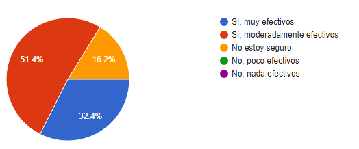

►
¿Con qué frecuencia usted juega a videojuegos?
La mayoría de los participantes (51.40%) indicaron que juegan videojuegos diariamente, lo que sugiere un alto nivel de familiaridad con el medio. Esta información destaca la audiencia potencialmente receptiva a un videojuego entre adolescentes y adultos jóvenes. La frecuencia semanal y mensual, aunque menos predominantes, aún representan una proporción significativa (10.80% y 5.40%, respectivamente), lo que indica que existe una base de usuarios activos a lo largo del tiempo. Por otro lado, el segmento que juega raramente (27.70%) también es digno de atención. Entender las razones detrás de esta baja frecuencia podría proporcionar información valiosa para el diseño del juego, adaptándolo para atraer a aquellos que no son jugadores habituales.
►
¿Qué tipo de videojuegos prefiere generalmente jugar?
La opción más preferida entre los participantes es claramente "Juegos de aventuras" con un 41.80% de las respuestas. Esta preferencia podría influir en el diseño del juego, sugiriendo la incorporación de elementos narrativos que estimulen la aventura. En segundo lugar, los "Juegos de disparos" cuentan con una significativa aceptación, representando el 33.70% de las respuestas, sugiriendo que la inclusión de elementos de competencia puede ser atractiva para la audiencia. Mientras tanto, los "Juegos de simulación" también tienen una representación considerable con el 20.40%. Esto resalta el interés en experiencias realistas y podría indicar que la simulación de situaciones de ciberseguridad de la vida real podría ser atractiva para este grupo.
►
¿Cuál es su plataforma preferida para jugar videojuegos?
Aunque la "PC" sigue siendo relevante (40.50%), se planea adaptar el juego para ser multiplataforma, abarcando tanto dispositivos móviles como PC, para satisfacer las preferencias dominantes (54.10%) y maximizar la accesibilidad del público objetivo. La opción de "Consola" (5.40%) presenta una demanda relativamente baja, pero se considerará en futuras etapas de desarrollo para ampliar la disponibilidad del juego.
►
¿Cómo definiría su nivel de conocimiento actual sobre ciberseguridad?
La mayoría de los encuestados (67.60%) indican un nivel de conocimiento "Moderado" sobre ciberseguridad. Esto destaca la importancia de diseñar el videojuego con un enfoque educativo que sea accesible tanto para aquellos con conocimientos básicos como para quienes buscan aprender más. La presencia de encuestados con un nivel "Bajo" (21.60%) también sugiere la necesidad de ofrecer contenido introductorio y educativo sobre ciberseguridad. Para garantizar la efectividad del juego, se debe equilibrar la dificultad para adaptarse a diferentes niveles de conocimiento, haciendo que la experiencia sea atractiva e informativa para todos.
►
¿Cree que la educación sobre ciberseguridad es importante para proteger su información personal en línea?
El 94.50% de los encuestados considera que la educación sobre ciberseguridad es "Importante" o "Muy importante" para proteger su información personal en línea. Este fuerte reconocimiento de la importancia de la educación en ciberseguridad respalda la pertinencia del proyecto de desarrollo del videojuego educativo. La alta proporción de respuestas positivas sugiere una demanda real y un interés significativo en la temática, lo que respalda la viabilidad del proyecto.
►
¿Tiene experiencia previa en el uso de videojuegos educativos?
El 54.10% de los encuestados tiene experiencia previa en el uso de videojuegos educativos, lo que podría facilitar la aceptación del videojuego educativo sobre ciberseguridad. La experiencia previa de una parte de la audiencia podría influir positivamente en la apreciación del enfoque educativo del juego. Sin embargo, también es vital considerar las expectativas y experiencias pasadas para cumplir con las preferencias de este grupo.
►
¿Le gustaría aprender más sobre ciberseguridad a través de un videojuego educativo?
El 48.60% de los encuestados expresó un interés directo en aprender sobre ciberseguridad a través de un videojuego educativo, por otro lado, la misma cantidad de personas respondió con un "Tal vez", señalando una cierta indecisión o necesidad de más información antes de comprometerse. Este resultado resalta la importancia de estrategias adicionales para ganar la confianza e interés de aquellos que aún tienen dudas. La transparencia en cuanto a los objetivos educativos y la mecánica del juego podría despejar las incertidumbres y motivar a aquellos que están en la categoría "Tal vez" a comprometerse más activamente.
►
¿Considera que los videojuegos educativos pueden ser efectivos para enseñar temas complejos?

El 83.80% de los encuestados considera que los videojuegos educativos son efectivos para enseñar temas complejos, dividiéndose entre aquellos que creen que son "muy efectivos" (32.40%) y "moderadamente efectivos" (51.40%). Esto resalta la percepción positiva hacia la capacidad de los videojuegos educativos para facilitar la comprensión de conceptos complejos. El hecho de que ningún encuestado considerara que los videojuegos son "No efectivos" indica una aceptación de la eficacia de esta modalidad educativa.
►
¿Estaría dispuesto a invertir tiempo en un videojuego educativo sobre ciberseguridad si fuera entretenido y educativo?
El 51.40% de los encuestados expresó estar dispuesto a invertir tiempo en un videojuego educativo sobre ciberseguridad, y un 48.60% respondió con cierta indecisión. Para maximizar la participación, el proyecto debe abordar explícitamente los elementos que contribuirán a la calidad del juego, enfocándose tanto en la faceta educativa como en la de entretenimiento. Las estrategias de marketing y comunicación deberán destacar la propuesta única del juego para atraer a aquellos que podrían estar indecisos o escépticos inicialmente.
►
¿Qué tipo de contenido relacionado con la ciberseguridad le gustaría ver en un videojuego educativo?
El 25.00% de los encuestados expresó un fuerte interés en aprender sobre la "Protección de contraseñas", destacando la preocupación por salvaguardar el acceso a información sensible. De manera aún más significativa, el 31.80% consideró crucial abordar la "Seguridad de datos personales", evidenciando la importancia que se le otorga a resguardar información privada contra posibles amenazas. Este enfoque en la seguridad de la información evidencia la necesidad de diseñar el contenido del videojuego centrándose en estas áreas clave, garantizando así una respuesta a las inquietudes del público objetivo.